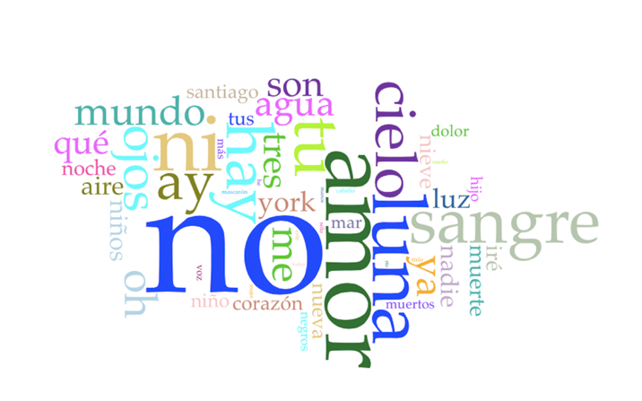
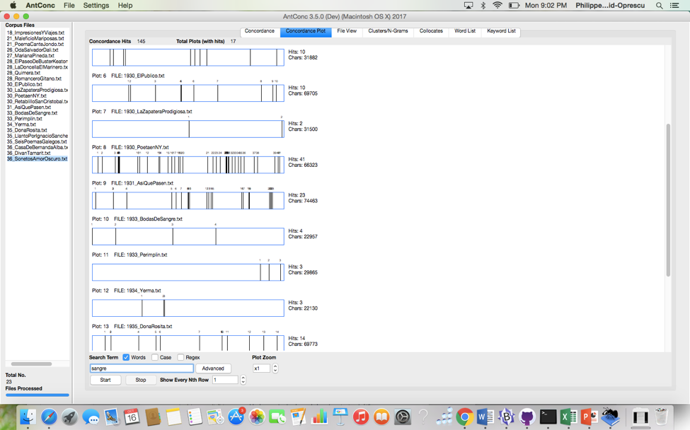
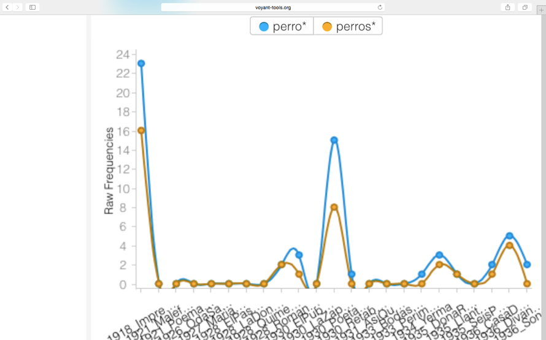
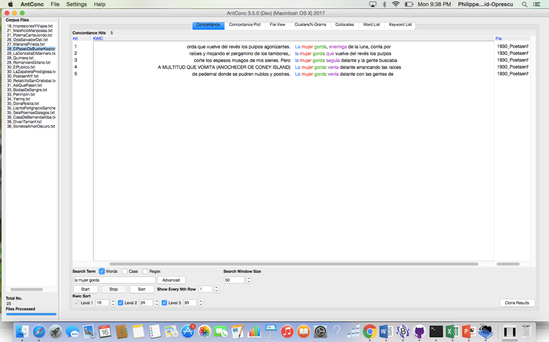
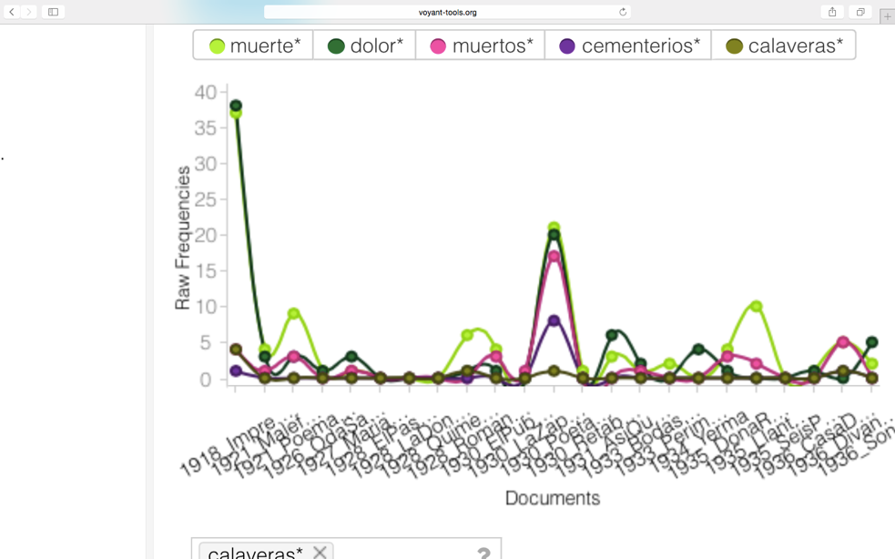

Federico García Lorca fue un poeta y compositor de teatro que nació en España en 1898 y fue ejecutado por la fuerza nacionalista en 1936 cuando comenzó la Guerra Civil española. Los temas de sus poemas son en su mayoría pesimistas y trágicos, con descripciones de su frustración hacia la sociedad y los muchos problemas de nuestro sistema, como las injusticias hacia cierta parte de la población o la deshumanización general de la humanidad.
Uno de los mejores ejemplos de sus fuertes opiniones y afirmaciones se encuentra en la colección "Poeta en Nueva York", escrita en 1929 cuando García se matriculó en la Universidad de Colombia para supuestamente aprender inglés. Poco después de su llegada, ocurrió la crisis financiera más severa de todos los tiempos y Nueva York fue probablemente el lugar más afectado del mundo. Esta experiencia fue definitivamente significativa para García y fortaleció su sentimiento pesimista hacia la sociedad y más particularmente hacia el sistema económico y financiero.
En el poema "New York: Oficina y Denuncia", critica con fuerza el sistema capitalista y su desconsideración y describe los aspectos dramáticos de una recesión para la población. Es interesante ver que, aunque la palabra "amor" es una de las más utilizadas en todas sus obras, lo que se muestra en la figura 1, pero también es una de las más utilizadas en la colección "Poeta in New York", que se muestra en la figura 2, no hay absolutamente ninguna referencia al tema del amor en este poema en particular.
La seriedad de la situación en Nueva York hizo que este texto estuviera muy centrado en el tema del capitalismo. Hay muchos comentarios fáciles de interpretar sobre los efectos de una crisis como el aumento del desempleo y el hecho de que este sistema es desconsiderado para la naturaleza:
Yo denuncio la conjura
de estas desiertas oficinas
que no radian las agonías
que borran los programas de la selva
Y hay algunas ataques directos sobre el egoísmo de los responsables que solo piensan sobre sus propios intereses sin preocuparse por los demás:
Yo denuncio a toda la gente
que ignora la otra mitad,
la mitad irredimible
Pero también hay muchas metáforas que están estrechamente relacionadas con la naturaleza y que se utilizan para fortalecer a sus críticos del sistema capitalista. Por ejemplo, para mostrar la deshumanización de la humanidad, compara a los humanos con muchos tipos diferentes de animales que están masacrando:
Todos los días se matan en New York
cuatro millones de patos
cinco millones de cerdos,
dos mil palomas para el gusto de los agonizantes
un millón de vacas
un millón de corderos
y dos millones de gallos
Debido a que este tema es el principal de este poema, la palabra “sangre”, que es ampliamente utilizada por García en sus obras en general, aparece considerablemente más en este colección en particular con un recuento de 41 para un total de 145, lo que se muestra en la figura 3.
Además de esos animales, hay muchos otros tipos que se mencionan como "pato", “cobra” o “perros”. Pero es importante tener en cuenta que el concepto de comparar humanos con animales es muy exclusivo de este poema. Por ejemplo, las palabras "vacas" o “vaca”, que es el animal más frecuente en este poema, tienen mucho de sus usos totales en la colección "Poeta en New York" y “Seis Poemas Galegos “ en comparación con otras de su obras, lo que se muestra en la figura 4, y las palabras “perros” o “perro” tienen muchos de sus usos en esta colección así como también en "Impresiones y Viajes", lo que se muestra en la figura 5. Esto muestra que García seguramente puede usar animales en otros poemas, pero el poema común en el que es posible encontrar todos los animales es "New York: Oficina y Denuncia” debido a este concepto particular metafórico.
Usa otras metáforas similares relacionadas con la naturaleza para criticar la desconsideración de las corporaciones al simbolizar sus edificios de oficinas como “montañas de cemento” y exponer sus indiferencias hacia la parte pobre y más débil de la población:
la mitad irredimible
que levanta sus montes de cemento
donde laten los corazones
de los animalitos que se olvidan
García también menciona dos veces y con versos muy similares las trágicas acciones provocadas por la crisis cuando los banqueros perdieron todo y se suicidaron saltando desde las ventanas de sus oficinas:
y los terribles alaridos de las vacas estrujadas
llenan de dolor el valle
donde el Hudson se emborracha con aceite
Las vacas estrujadas son obviamente una metáfora para aquellos individuos que perdieron todo y que gritan mientras caen a la muerte y el valle se usa para ilustrar el espacio entre dos edificios altos como en la ciudad de Nueva York, a los que se hace referencia como “montañas de cemento” en otro parte del poema. Y finalmente, usó una personificación del río Hudson estando ebrio para representar la ubicación de Wall Street y la irresponsabilidad de esas corporaciones.
El poema finaliza con versos muy similares, la única diferencia está en el primero verso “y me ofrezco a ser comido por las vacas estrujadas”, que indica el estado de ánimo y el pesimismo de García sobre la situación. Es consciente de que muchas de las personas que perdieron todo a causa de esta crisis se opondrían enérgicamente a su trabajo y opinión e incluso defenderían este sistema capitalista responsable de sus miserias, lo que lo hace impotente e inútil.
Su soledad y aislacionismo con el resto de la población también se encuentra en el poema "Paisaje de la multitud que vomita" que escribió mientras estuvo en Nueva York:
yo, poeta sin brazos, perdido
entre la multitud que vomita,
sin caballo efusivo que corte
los espesos musgos de mis sienes.
Su desesperación y su sentimiento impotente también se pueden ver a través de versos como "Sin remedio, hijo mío, ¡vomita! No hay remedio.", en los cuales parece darse cuenta de que no hay solución a los problemas de este mundo y lo único que queda por hacer es indignarse, lo que es ciertamente el tema más central de sus obras y más particularmente de la colección de poemas "Poeta en New York". Sus fuertes convicciones pesimistas se pueden ver fácilmente en la figura 1, que muestra que el uso más común en todo su trabajo son palabras negativas como "no" o expresión como "ay" como el verso “¡Ay de mí! ¡Ay de mí! ¡Ay de mí!”
Aunque todavía hay algunas referencias a animales o naturaleza como "el gato que se tragó una rana por descuido" o su referencia general a la palabra “luna” como muestra la figura 1, una de las metáforas principales en este poema gira claramente en torno de la palabra “vómito” que describe su disgusto por lo que está experimentando en Nueva York:
Llegaban los rumores de la selva del vómito
con las mujeres vacías, con niños de cera caliente,
con árboles fermentados y camareros incasables
que sirven platos de sal bajo las arpas de la saliva
Otra metáfora interesante en este poema es a través de “la mujer gorda” que aparece 5 veces en el poema y todo la colección "Poeta en New York" como muestra la figura 6 y que se utiliza para demostrar la codicia sin límites y los estragos de un sistema capitalista para la sociedad y cómo puede afectar a cualquiera:
La mujer gorda, enemiga de la luna,
corría por las calles y los pisos deshabitados
y dejaba por los rincones pequeñas calaveras de paloma
y levantaba las furias de los banquetes de los siglos últimos
y llamaba al demonio del pan por las colinas del cielo barrido
La frase “La mujer gorda venía delante” se repite también una multitud de veces a través del poema y simboliza cómo la influencia del capitalismo está tan presente y visible, pero la población no parece ver el peligro de destrucción que trae consigo:
Son los cementerios, lo sé, son los cementerios
y el dolor de las cocinas enterradas bajo de la arena
son los muertos, los faisanes y las manzanas de otra hora
los que nos empujan en la garganta.
Este tema de muerte y devastación visto en esos versos es muy común también para el resto de las obras de García porque va de acuerdo con su sentimiento general de pesimismo. La figura 7 muestra el resultado de una búsqueda de algunos de los términos en este poema en comparación con el resto de sus obras. Es posible ver que, aunque generalmente se usa ampliamente entre diferentes trabajos durante su vida, este tema se concentra principalmente en “Impresiones y Viajes”, así como en "Poeta en Nueva York". Es interesante darse cuenta de que ambas colecciones de poemas fueron escritas durante los años en los que viajaba como en 1918 con su maestro en Europa o en 1929 como estudiante en América, que fueron años importantes que crearon experiencias de cambio de vida que dieron forma a la visión y trabajo de García.
Anexo
Figura 1

Nube de palabras para todos los trabajos de García
Figura 2
Nube de palabras para “Poeta en New York”
Figura 3
 Búsqueda de la palabra “sangre”
Resultados: 145 veces en total y 43 veces en Poeta en Nueva York
Figura 4
Figura 5
Figura 6
Figura 7
